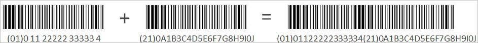

Beschreiben von UDI-Komponenten
Eine UDI besteht aus zwei Teilen: einer Gerätekennung (Device Identifier, DI) und einer Produktionskennung (Production Identifier, PI). Beide Teile sind im UDI-Format enthalten.
Die Gerätekennung ist ein statischer Code, mit dem der Hersteller sowie die Marke und das Modell eines Geräts identifiziert werden. Die DI wird von einer von der FDA zugelassenen Stelle zugewiesen. Informationen zur Definition von Gerätekennungen in der Anwendung finden Sie unter "Definieren von Gerätekennungen".
Die Produktionskennung ist ein variabler Code, der vom Gerätehersteller erstellt wird. Die PI gibt Informationen wie die folgenden an:
| • | Seriennummer |
| • | Losnummer |
| • | Ablaufdatum |
| • | Herstellung-Datum |
Weitere Informationen zur Definition von Produktionskennungen finden Sie unter "Definieren von Produktionskennungen und UDI-Ausdrücken".
Eine UDI muss sowohl maschinenlesbar als auch für Menschen lesbar sein. Das Format ist in der Regel ein Strichcode, unter dem alphanumerische Informationen gedruckt sind. Im typischen UDI-Format ist die Gerätekennung zuerst aufgelistet, gefolgt von der Produktionskennung am Ende.
Die folgenden Abbildungen enthalten Beispiele für UDI-Formate.
